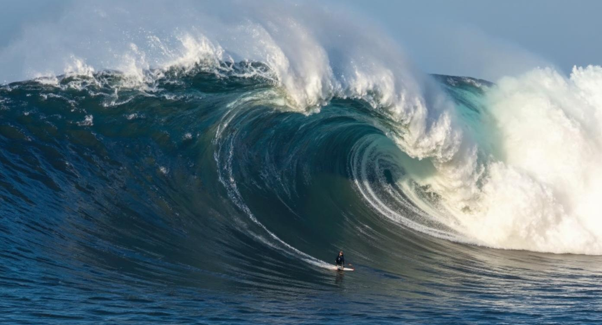
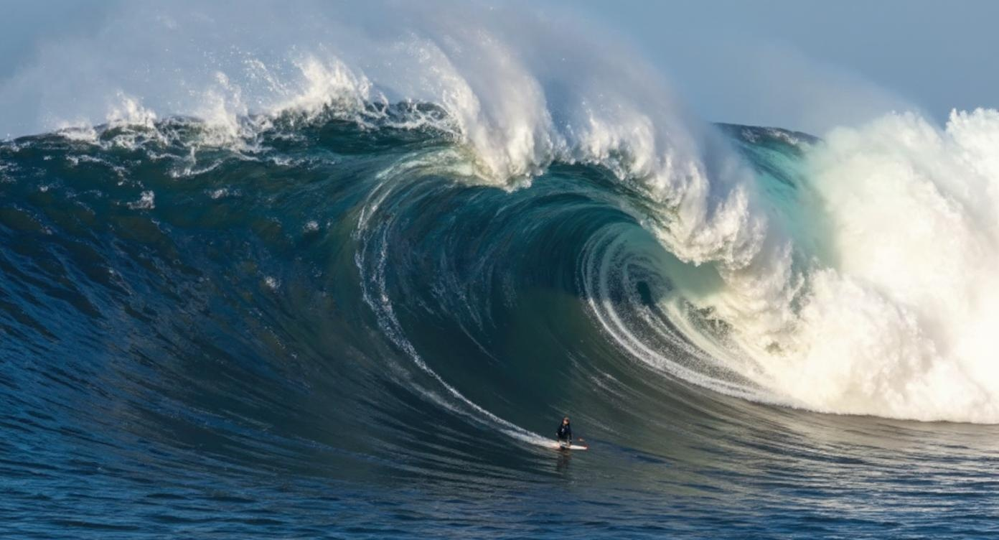

Teahupo'o, Tahiti – The Bone Crusher
Prepare to enter the realm of Teahupo'o, a name that translates to "Wall of Skulls" – and for good reason. This isn't the tallest wave, but it may be the heaviest and most dangerous. Located on the southwest coast of Tahiti, it’s where beauty meets brutality, and every ride could be your last.
 

The Untamed Slab
Where Liquid Perfection Meets Raw Power. Teahupo'o is a hypnotic, barreling beast that redefines what it means to surf dangerously. It’s not about height—it’s about weight, depth, and commitment.
Teahupo'o at a Glance: Quick Facts for the Ultra-Brave
- Location: Teahupo'o, Tahiti, French Polynesia
- The Secret Sauce: A shallow, circular coral reef paired with deep ocean swells. The result? A super-hollow, "slabbing" wave that looks like it breaks below sea level.
- Wave Type: Predominantly a left-hand barrel. Known for its thick lip and the illusion of imploding below the reef.
- Best Season: May to October (Southern Hemisphere winter)
- Claim to Fame: WSL Championship Tour stop. Laird Hamilton’s famous “Millennium Wave.”
- Danger Level: Catastrophic. Razor-sharp coral just beneath. One of the most punishing wipeouts in surfing.
The Evolution of the Wall: Teahupo'o's Chilling History
Though local Tahitians had surfed it for decades, the wave gained international acclaim in the late 1990s. Its mesmerizing "slab" shape and frightening beauty became surf legend. Laird Hamilton’s iconic Millennium Wave in 2000 cemented Teahupo'o's mythical status. Since then, it’s become a regular battleground for surfers like Kelly Slater, John John Florence, and Raimana Van Bastolaer.
Each major swell here brings another chance for history to be made—and another surfer to test their fate on one of the most technical and violent barrels on Earth.
Why Teahupo'o Wows & Inspires
Teahupo'o mesmerizes both surfers and spectators. To watch it is to feel awe—and a little fear. For surfers, it’s the ultimate barrel. For spectators, it’s a CGI-looking wave that somehow exists in the real world. It’s not the tallest, but it might be the most demanding wave on the planet.
This wave demands precision, bravery, and respect. Surfers don’t just drop in; they dive headfirst into risk, racing along inches above a deadly coral slab. Teahupo'o is the pinnacle of high-consequence surfing—and an icon of the sport’s heart-stopping beauty.